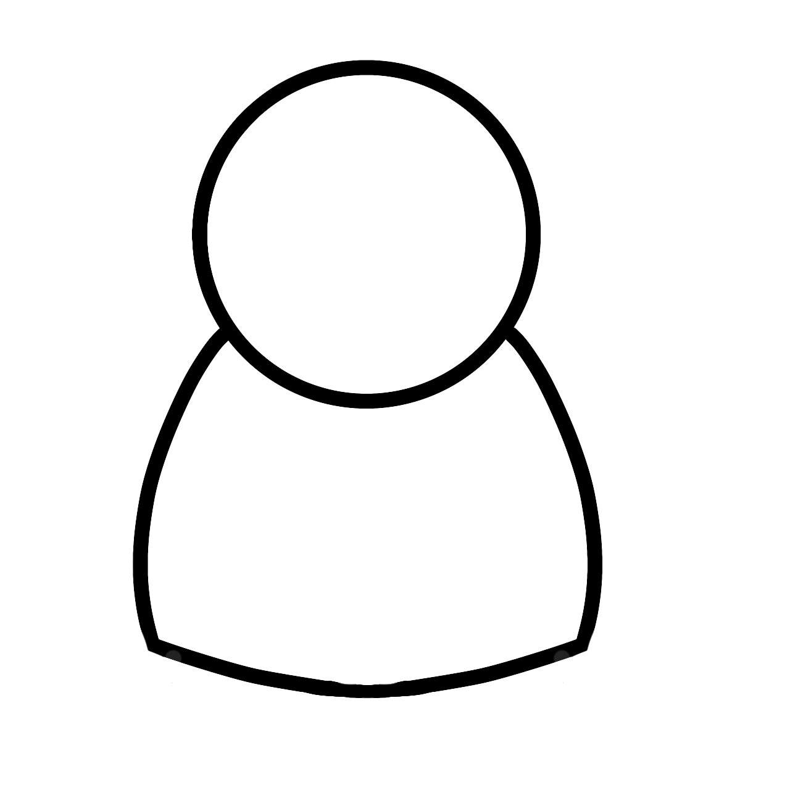

 Menu Histórias Galeria extrasAlma da CriaçãoGuardião 1Alma da luzGuardião 2Alma do VenenoGuardião 3Alma da BorboletaGuardião 4Alma do GeloGuardião 5 Guardião 6 Alma da Rosa Guardião 7 Alma do Som Guardião 8 Alma da Folha Guardião 9 Alma do Vento Guardião 10 Alma da Ligação